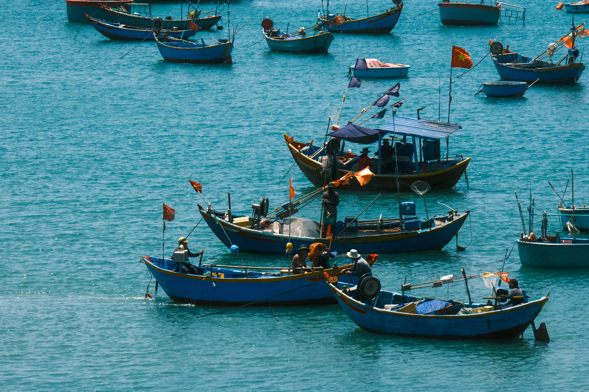

フォトギャラリー(私の撮った写真)
ビントゥアンの故郷に帰ったとき、私はその美しい風景や人々の日常を写真に収めました。 自然の輝き、静かな漁村、そして懐かしい瞬間の数々。私の視点から切り取った写真をぜひご覧ください。
どの写真も、それぞれ違った感情を表現しているようで、壮大な海の広がりを捉えたものや、穏やかな夕暮れの光に包まれたものなど、 どれもが特別な一瞬です。その一瞬一瞬が、今回の帰省の思い出となり、心に残る写真になりました。




どの写真も、それぞれ違った感情を表現しているようで、壮大な海の広がりを捉えたものや、穏やかな夕暮れの光に包まれたものなど、 どれもが特別な一瞬です。その一瞬一瞬が、今回の帰省の思い出となり、心に残る写真になりました。